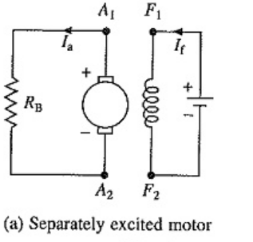
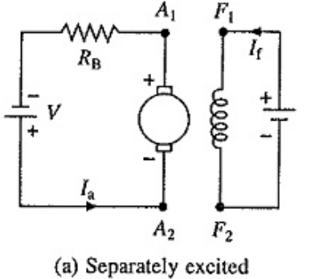
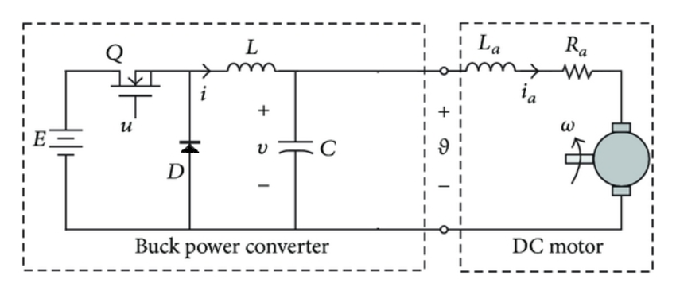
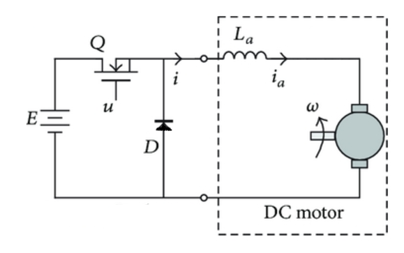

class: center, middle # EE-361 # Speed Control of DC Motors ## Ozan Keysan [ozan.keysan.me](http://ozan.keysan.me) Office: C-113 <span class="meta">•</span> Tel: 210 7586 --- # Motor = Generator ## No difference between a [DC motor and generator](http://www.youtube.com/watch?v=6kgzrXFSDwA) ## Richard Feynman in [Electric Motors](https://youtu.be/qhh32JYkQPk?t=23s) --- # DC Machine Types ## Different ways to connect field winding ### - Separately Excited ### - Shunt Excited ### - Series Excited ### - Compound Machines --- <!-- # Series DC Motor <img src="http://electriciantraining.tpub.com/14177/img/14177_44_1.jpg" alt="Drawing" style="width: 300px;"/> ## What happens if AC is applied? ### Series DC Motor = Universal Motor (Works both with AC and DC) [How universal motors work?](http://woodgears.ca/motors/dc.html) --> # DC-Machine Equations - ## Induced Voltage Proportional to Speed ## \\(E\_a = K\_a \omega\_m \Phi\_{pp}\\) -- - ## Torque Proportional to Armature Current ## \\(T =K\_a \Phi\_{pp} I\_a \\) --- # DC-Machine Equations - ### The direction of \\(I_a\\) is determined by the relation between \\(V_t \\) and \\(E_a \\) -- - ### If \\(V_t > E_a \\) it's motoring mode. -- - ### If \\(E_a > V_t \\) it's generating mode. -- - ### The speed changes depending on the net torque (\\(T\_{net}=T\_{elec}-T\_{mech}\\)) ## \\(T= J \dfrac{d \omega}{dt}\\) --- # Steady State Operating Point ### Intersection of motor characteristics and load curve (\\(T\_{elec}=T\_{mech}\\)) <img src="http://www.electrical4u.com/electrical-motor/images/dc-motor-characteristics1.gif" alt="Drawing" style="width: 600px;"/> --- # Separately Excited Motor -- ## What happens if the field current is increased in a motoring mode? -- ## What happens if we swap the field winding terminals? --- # Four Quadrant Operation <img src="http://upload.wikimedia.org/wikipedia/en/thumb/8/83/Four_quadrant_motion_control_of_a_motor.jpg/600px-Four_quadrant_motion_control_of_a_motor.jpg" alt="Drawing" style="width: 600px;"/> [Riding a robot hand](http://www.youtube.com/watch?v=bxbjZiKAZP4) --- # Electric Braking -- ## 1-Regenerative Braking (Generating) ### \\(I_f\\) is increased to control \\(E_a\\) ### Most efficient braking ### Voltage source has to be bi-directional --- ## 1-Regenerative Braking (Generating) ### Case Study: Formula-1 [KERS](https://en.wikipedia.org/wiki/Kinetic_energy_recovery_system) <img src="http://i3.mirror.co.uk/incoming/article7423073.ece/ALTERNATES/s1227b/Day-two-of-F1-winter-testing-at-Circuit-de-Catalunya.jpg" alt="Drawing" style="width: 500px;"/> [Renault KERS](https://www.youtube.com/watch?v=1RlZF9j3NoE), [F1 Energy Recovery System](https://www.youtube.com/watch?v=vgBdlOgCmJU), [BBC KERS](https://www.youtube.com/watch?v=n9fAnjgR8lA), [KERS explained](https://www.youtube.com/watch?v=k8lyBFmkAKw), [Power Unit Regulations](https://www.fia.com/sites/default/files/publication/file/FIA%20F1%20Power%20Unit%20leaflet.pdf) [KERS specs](https://www.quora.com/What-is-KERS-and-how-it-is-used-in-Formula-One), [specs2](http://jalopnik.com/how-formula-ones-amazing-new-hybrid-turbo-engine-works-1506450399) --- # Electric Braking -- ## 2-Dynamic Braking ### Kinetic energy is dissipated using a braking resistor <img src="https://www.megaresistors.com/wp-content/uploads/2014/06/MR-DBR-Labelled.jpg?x60444" alt="Drawing" style="width: 450px;"/> --- ## 2-Dynamic Braking ### Kinetic energy is dissipated using a braking resistor  --- ## 2-Dynamic Braking ### Case Study: Locomotives <img src="http://www.engineeringexpert.net/Engineering-Expert-Witness-Blog/http://www.engineeringexpert.net/web/Engineering-Expert-Witness-Blog/wp-content/uploads//2010/06/loco1.jpg" alt="Drawing" style="width: 750px;"/> [Dynamic Brake Noise](https://www.youtube.com/watch?v=YGc8Y2KQ7-c), [Dynamic Brake Fan Problem](https://youtu.be/LqrExWCVCXU?t=3m35s) --- ## 2-Dynamic Braking ### Case Study: Locomotives <img src="http://vignette2.wikia.nocookie.net/locomotive/images/5/59/Dynamic_Brake_Vents.jpg/revision/latest?cb=20130820064035" alt="Drawing" style="width: 500px;"/> [Dynamic Brake Noise](https://www.youtube.com/watch?v=YGc8Y2KQ7-c), [Dynamic Brake Fan Problem](https://youtu.be/LqrExWCVCXU?t=3m35s) --- # Electric Braking -- ## 3-Plugging ### Suddenly reverse the polarity of \\(V_t\\) ### Fastest way to stop the motoring ### Not suitable for continuous operation as all the kinetic energy is dissipated in the motor --- # Electric Braking ## 3-Plugging  --- # Electric Braking ## 3-Plugging <img src="http://www.ni.com/cms/images/devzone/ph/0a863253169.gif" alt="Drawing" style="width: 500px;"/> --- # Speed Control of DC Motors ### What are your options, if you want to change the operating point? -- - ## Vary the terminal voltage (\\(V_t\\)) -- - ## Vary Field Current (\\(I_f\\)) (and hence flux) -- - ## Vary Both --- # Hybrid Car ## Toyota Prius  --- # Hybrid Car ## Toyota Prius  ## What happens if you drive uphill? --- # Armature Voltage Control -- - ## Speed Control over a wide range - ## Commonly used --- # Armature Voltage Control <img src="http://www.electrical4u.com/electrical/wp-content/uploads/2013/04/voltage-control-9-3-15.gif" alt="Drawing" style="width: 800px;"/> --- # Armature Voltage Control Techniques: ## How can you generate a variable voltage from a constant voltage source? -- ## Inefficient and unsuitable methods - ### Voltage divider resistances - ### BJT transistors --- # Armature Voltage Control Techniques: ## Pulse-Width Modulation (PWM)  --- # Armature Voltage Control Techniques: ## Pulse-Width Modulation (PWM)  --- ## Pulse-Width Modulation (PWM) ## But you can't drive a motor like that. WHY?  --- ## Pulse-Width Modulation (PWM) ## Solution use a switch with a free-wheeling diode: -- ## Step Down (Buck) Converter  --- ## Simplified Buck Converter  ## Let's obtain voltage and current characteristics. --- # Armature Voltage Control Techniques: ## Uni-directional Control <img src="http://www.nerdkits.com/videos/motors_and_microcontrollers_101/finalcircuit.png" alt="Drawing" style="width: 600px;"/> --- # Armature Voltage Control Techniques: ## [H-Bridge](http://www.modularcircuits.com/blog/articles/h-bridge-secrets/h-bridges-the-basics/) : Bi-directional Control <img src="https://www.allaboutcircuits.com/uploads/articles/H-bridge.jpg" alt="Drawing" style="width: 500px;"/> --- # Field Current Control -- - ## An external resistor or variable voltage supply -- - ## Usually used to achieve higher speeds --> -- Decrease \\(I_f\\) (Flux weakening) -- - ## Speed control over a narrow range --- # Field Current Control <img src="http://www.electrical4u.com/electrical/wp-content/uploads/2013/04/Field-Flux-Control-of-DC-Motor-9-3-15.gif" alt="Drawing" style="width: 800px;"/> --- ## Armature-Field Current Control <img src="http://www.electrical4u.com/electrical/wp-content/uploads/2013/04/torque-power-characteristic-9-3-15.gif" alt="Drawing" style="width: 500px;"/> --- # Equivalent Circuit with Mechanical System <img src="http://ctms.engin.umich.edu/CTMS/Content/MotorSpeed/System/Modeling/figures/motor.png" alt="Drawing" style="width: 500px;"/> ## Dynamic response limited by: Inertia & Inductance [Fast robotic arm](https://youtu.be/SOESSCXGhFo?t=15s) --- # Control Dynamics: ### What are the factors affecting dynamic precision? -- - ### Inertia -- - ### Motor Inductance -- - ### Measurement -- - ### Processing -- - ### Power Electronics [Robot table tennis](http://www.youtube.com/watch?v=tIIJME8-au8), [Robot katana](http://www.youtube.com/watch?v=cR-YlZ9NdIA), [fast robot](https://www.youtube.com/watch?v=vN7BPyy69Ds) --- ## You can download this presentation from: [keysan.me/ee361](http://keysan.me/ee361) --- --- # Electric Commutator  --- # Can you find a way to remove commutators? -- ## Brushless DC Motors ### Rotating Magnets, Stationary Coils  --- # Brushless DC Motors ### Rotating Magnets, Stationary Coils <img src="https://embeddedbyermsdandyan.files.wordpress.com/2015/06/211d7-stepper_motor.gif" alt="Drawing" style="width: 360px;"/> [How brushless DC motors work?](http://www.youtube.com/watch?v=bCEiOnuODac) --- # Brushless DC Motors ### Rotating Magnets, Stationary Coils <img src="https://i.ytimg.com/vi/C1-klL3B9LU/maxresdefault.jpg" alt="Drawing" style="width: 700px;"/>